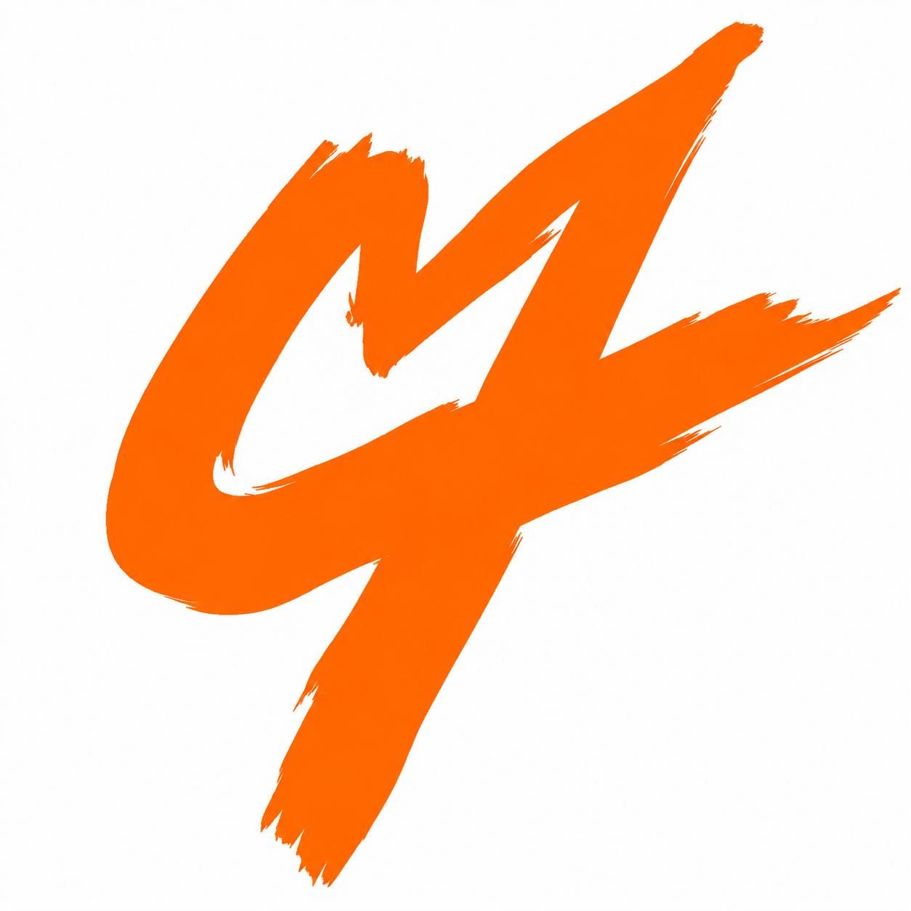

ORIGINAL
SCORE.
Custom composition for film, series, shorts, branded work, and the scene that needs its own language.
- Film + television
- Short-form + trailers
- Documentary + editorial

MUSIC DIRECTION / ORIGINAL COMPOSITION / SYNC
Calitoy Cues creates original music and sonic worlds for picture—the moment before the cut, the aftershock after it, and everything the dialogue can’t say.

PLAY THE FEELING001 / ORIGINAL CUE
FOR THE TURNING POINT
NOT BACKGROUND MUSIC.
We start with the emotional temperature of a scene—not a genre checkbox. Then we build the music that gives it a pulse: something cinematic, human, immediate, and built to stay under the skin.
Custom composition for film, series, shorts, branded work, and the scene that needs its own language.
Music systems for brands and worlds that need to sound as specific as they look.
Purpose-built tracks for supervisors and editors who need a clean answer fast.
THE FEELING BOARD
Every project begins with an emotional brief, not a reference-track pile.
Late-night, bruised, neon.
Immediate, bright, dangerous.
Warm, honest, unresolved.
Pressure, release, consequence.
Send the scene, the script, the edit, or just the feeling you need to land.
We define the emotional target, world, and sonic palette before notes start piling up.
Composition, production, revisions, and delivery built around your actual edit.
Final mix, alternates, cutdowns, and stems organized for the people finishing the work.
04 / START A CUE
Send the project. We’ll return with the right next question.